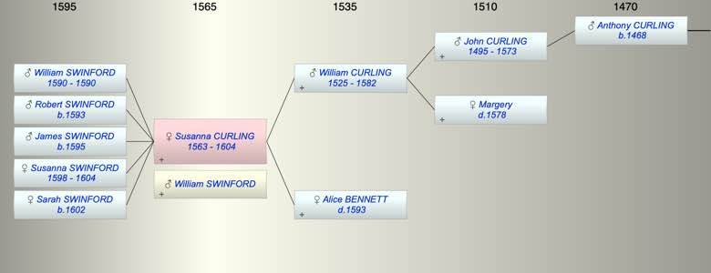

| [Index] |
| Susanna CURLING (1563 - 1604) |
|  |
| b. 1563 at St Laurence |
| m. William SWINFORD at Minster |
| d. 1604 at Minster aged 41 |
| Parents: |
| William CURLING (1525 - 1582) |
| Alice BENNETT ( - 1593) |
| Siblings (6): |
| Roger CURLING (1557 - 1590) |
| Gregory CURLING (1559 - 1608) |
| William CURLING (1561 - 1618) |
| Alice CURLING (1564 - 1570) |
| Anthony CURLING (1567 - 1626) |
| Nicholas CURLING (1570 - 1619) |
| Children (5): |
| William SWINFORD (1590 - 1590) |
| Robert SWINFORD (1593 - ) |
| James SWINFORD (1595 - ) |
| Susanna SWINFORD (1598 - 1604) |
| Sarah SWINFORD (1602 - ) |
| Events in Susanna CURLING (1563 - 1604)'s life | |||||
| Date | Age | Event | Place | Notes | Src |
| Married William SWINFORD | Minster | Note 1 | |||
| 1563 | Susanna CURLING was born | St Laurence | Note 2 | ||
| 1582 | 19 | Death of father William CURLING (aged 57) | Note 3 | ||
| 1590 | 27 | Birth of son William SWINFORD | Minster | bap Minster 5 Apr 1590 | |
| 1590 | 27 | Death of son William SWINFORD | Minster | buried Minster 18 Aug 1590 | |
| 1593 | 30 | Birth of son Robert SWINFORD | Minster | bap Minster 22 Jun 1593 | |
| 1593 | 30 | Death of mother Alice BENNETT | Note 4 | ||
| 1595 | 32 | Birth of son James SWINFORD | Minster | bap Minster 28 Sep 1595 | |
| 1598 | 35 | Birth of daughter Susanna SWINFORD | Minster | bap Minster 27 Aug 1598 | |
| 1602 | 39 | Birth of daughter Sarah SWINFORD | Minster | bap Minster 25 Apr 1602 | |
| 1604 | 41 | Susanna CURLING died | Minster | buried Minster 26 Aug 1604 | |
| 1604 | 41 | Death of daughter Susanna SWINFORD (aged 6) | Minster | buried MInster 16 Mar 1604 | |
| Created on a Mac™ using iFamily for Mac™ on 8 Oct 2023 |